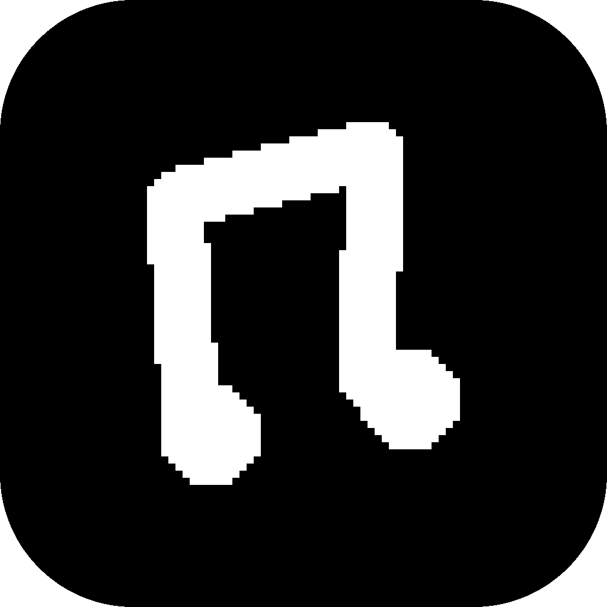

Política de privacidade
Atualizada em 17 de novembro de 2026
O Skáld é um reprodutor de música que roda no seu aparelho. Ele não tem servidor, não tem conta própria, não coleta estatísticas de uso e não mostra anúncios. Esta página explica o que ele guarda e quando usa a internet.
O que fica no seu aparelho
A biblioteca, as playlists, as curtidas, o histórico de reprodução, as configurações, as letras e as capas que você escolhe ficam num banco de dados local, no próprio aparelho. Nada disso é enviado a ninguém, a não ser para o seu próprio Google Drive, se você ligar a sincronização.
Quando o Skáld usa a internet
Só quando você pede:
- Completar informações e capas: consulta o MusicBrainz e o Cover Art Archive com o título, o artista e a duração da música.
- Buscar letras: consulta o LRCLIB com título, artista, álbum e duração.
- Verificar novas versões (desligado por padrão): consulta a lista de versões do Skáld no GitHub.
- Sincronização pelo Google Drive: descrita abaixo.
Esses serviços recebem o seu endereço IP, como qualquer site, e têm as próprias políticas de privacidade. O Skáld não envia a eles nenhuma informação sua além da música consultada.
Google Drive
Acesso pedido. Ao entrar com a conta Google, o Skáld pede apenas a permissão drive.file (“ver, editar, criar e excluir apenas os arquivos do Google Drive que você usa com este app”). Com ela, o Skáld só enxerga os arquivos que ele mesmo criou. Ele também lê o e-mail e o nome da conta, só para mostrar em qual conta você entrou.
O que é guardado no Drive. Uma pasta “Skáld” com as suas músicas (subpasta musicas) e um arquivo por aparelho com playlists, curtidas, histórico e apelidos de artistas (subpasta dados). Tudo fica na sua conta, e só você tem acesso.
Como é usado. Esses dados servem apenas para copiar as suas músicas e listas entre os seus aparelhos quando você aperta “Sincronizar agora”. O Skáld nunca apaga arquivos do seu Drive nem do seu aparelho.
Onde fica a autorização. O token de acesso fica num arquivo dentro da pasta de dados do Skáld no seu aparelho, legível apenas pelo seu usuário. Ele nunca é enviado a outro lugar além do Google.
Compartilhamento. Os dados recebidos das APIs do Google não são vendidos, não são compartilhados com terceiros, não são usados para publicidade e não são usados para treinar modelos de inteligência artificial. O uso e a transferência de informações recebidas das APIs do Google pelo Skáld seguem a Política de dados do usuário dos serviços de API do Google, incluindo os requisitos de Uso Limitado.
Como desconectar. Em Configurações → Sincronização, “Sair” revoga a autorização no Google e apaga o token do aparelho. Você também pode revogar o acesso em myaccount.google.com/permissions. A pasta “Skáld” continua no seu Drive até você mesmo apagá-la.
Avisos por e-mail
A lista de avisos de novas versões é um serviço à parte, no Buttondown, em que você se inscreve pelo navegador. O Skáld não guarda nem envia o seu e-mail.
Crianças
O Skáld não coleta dados de ninguém, inclusive de crianças.
Mudanças e contato
Mudanças nesta política aparecem nesta página, com a data no topo. Dúvidas: abra uma conversa em github.com/Beedb/skald/issues.